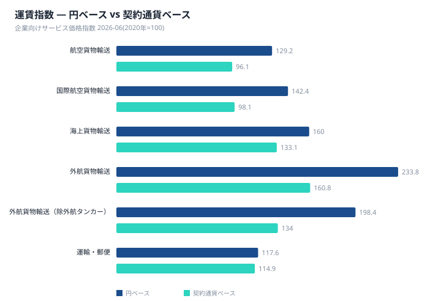
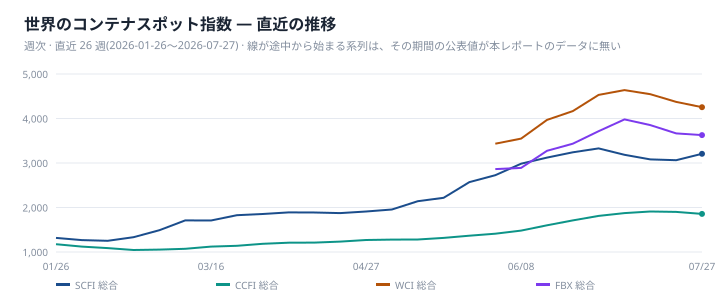
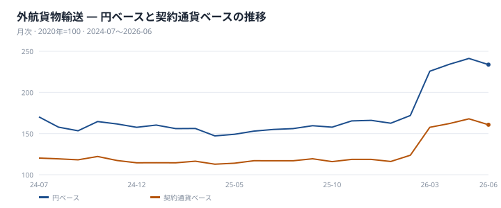
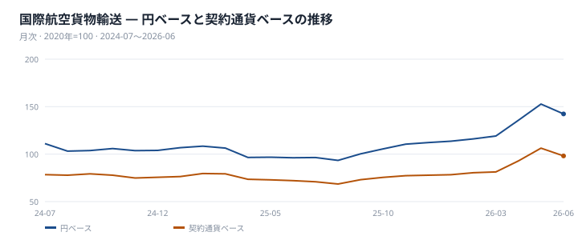
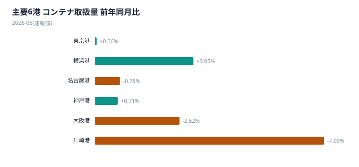
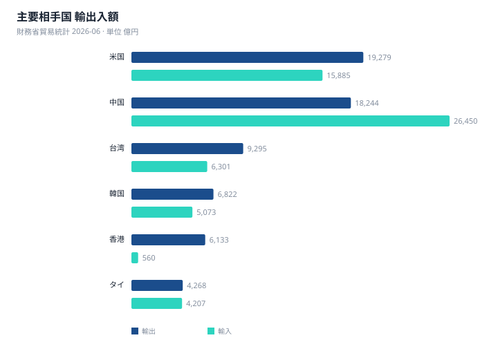

本号は指標ごとに基準月が異なる。企業向けサービス価格指数と貿易統計は2026年6月分、港湾統計は速報値で2026年5月分である。対象月のずれを踏まえたうえで、世界と日本の局面を突き合わせる。
世界のスポット運賃は方向が割れている。2026年7月27日時点でSCFI総合は3205.97、前週比+4.7%と上昇した一方、CCFI総合は1857.04(▲2.3%)、WCI総合は4255(▲3.0%)、FBX総合は3627.6(▲1.0%)といずれも下落している。4系列のうち上昇は1系列のみで、世界のコンテナ市況全体としては強含みとは言い切れない。
同時期、日本の外航貨物輸送は円ベース233.8(前年同月比+52.8%)、契約通貨ベース160.8(同+37.4%)と、いずれのベースでも大きく伸びている。円ベース指数は契約通貨ベース指数を45.4%上回り、為替換算による上乗せ率は+11.2%である。この差が今月の芯である。外航貨物輸送や国際航空貨物輸送のように外貨建て契約が主体の系列では円安の影響がそのまま円ベース指数に反映される。一方、国内航空貨物輸送は89.8(▲3.2%)と円ベースでも前年を下回り、円建て契約が主体の国内系列には為替の上乗せが及ばない。同じ「運輸・郵便」に属していても、契約通貨が違うだけで伸び方は大きく分かれる。
国際航空貨物輸送は円ベース142.4に対し契約通貨ベース98.1で、契約通貨ベースは基準年(2020年=100)を下回っている。運賃そのものの水準はまだ基準年に届いていないにもかかわらず、円ベースでは基準年を大きく上回って見える。ここにも同じ構図が表れている。鉄道はユーラシア鉄道運賃指数(ERAI)が総合3704、前月比+0.19%と小幅な上昇にとどまり、西航3815・東航2604で水準では西航が東航を上回る。貿易統計は輸出額10兆9265億円(+19.3%)、輸入額11兆3365億円(+25.4%)、貿易収支は▲4099億円で、輸出相手国は米国1兆9279億円が最大、中国1兆8244億円、台湾9295億円が続いた。
港湾統計は5月分の速報値であり、6月分の他指標とは対象月が異なる点に留意が必要である。来月に向けては、SCFIの上昇が次にどの系列に広がるか、そして今回まだ公表されていない7月以降の企業向けサービス価格指数が円ベース・契約通貨ベースの両方でどちらを向くかを確認したい。

2026年7月27日時点のSCFI総合は3205.97、前週比+4.7%と上昇した。一方、同時点のCCFI総合は1857.04(▲2.3%)、WCI総合は4255(▲3.0%)、FBX総合は3627.6(▲1.0%)といずれも下落している。主要4系列のうち上昇は1系列のみで、方向は割れている。
航路別では、2026年7月20日時点のSCFI上海→欧州が3155、上海→米西岸が5535、上海→米東岸が8040である。これらの航路別値には前週比が示されておらず、水準のみを確認できる。総合指数の上昇はSCFIに限られており、他の3系列は基準日である7月27日時点でなお下落方向にある。
2026年6月分の外航貨物輸送は、円ベース233.8(前年同月比+52.8%)に対し契約通貨ベースは160.8(+37.4%)である。為替換算による上乗せ率は+11.2%、基準年からの累積では円ベース指数が契約通貨ベース指数を45.4%上回っている。契約通貨ベースの伸びが運賃そのものの動きに近く、円ベースにはこれに為替換算の影響が加わっている。
外航貨物輸送(除外航タンカー)は円ベース198.4(+26.1%)、契約通貨ベース134.0(+13.8%)で、為替換算による上乗せ率は+10.9%、基準年からの累積では48.1%円ベースが上回る。親系列である海上貨物輸送は円ベース160(+24.5%)、契約通貨ベース133.1(+15.4%)で、為替換算による上乗せ率は+7.9%、累積では20.2%円ベースが上回る。いずれの系列も円ベースの伸びが契約通貨ベースを上回り、荷主が支払う円建て価格には為替換算の影響が反映されている。
世界のスポット指数は2026年7月27日時点まで週次で公表されているのに対し、日本のSPPIは2026年6月分までの月次公表であり、基準日は揃わない。両者を同一時点の動きとして比較することはできず、同時期に観測された事実として並べるに留まる。世界のコンテナ指数は4系列中1系列のみ上昇という状況にあるが、日本の外航貨物輸送は円ベースで大きな伸びを示しており、この差には為替換算の影響が含まれる。SCFIが直近で上昇に転じている一方、日本の外航運賃指数は6月分までの公表であり、7月以降の動きは次回以降の公表で確認することになる。
北米航路(2026年6月、往航)では18カ国・地域合計が191万6307TEU(+14.0%)である。日本発は5万3701TEU(▲3.2%、シェア2.8%)と全体の伸びに反して減少した。一方、中国発は95万4767TEU(+25.5%、シェア49.8%)と大きく伸び、韓国は10万8021TEU(+0.9%)、台湾は5万5234TEU(▲7.3%)、ベトナムは31万3840TEU(+3.4%)である。
欧州航路(2026年5月、往航)はアジア合計186万6984TEU(+3.1%)である。地域別では中華地域が147万5375TEU(+3.4%、シェア79.0%)、東南アジアが24万7523TEU(+10.6%、シェア13.3%)と伸びた一方、北東アジアは14万4086TEU(▲9.8%、シェア7.7%)と減少した。欧州航路には日本単独の数字はなく、日本は北東アジアに含まれる。この航路別の荷動き量は港湾統計のTEUとは母集団が異なり、両者を足し合わせることはできない。
供給側では、Drewryが集計する主要East-West航路(アジア〜欧州・太平洋・大西洋)の欠航便数が2026年7月31日時点で58便、計画723便に対し欠航率8%である。公表された直近5回(2026年6月5日、7月3日、7月10日、7月17日、7月31日)を見ると、欠航便数は39便から58便、欠航率は5%から8%の範囲で推移し、直近の7月31日時点が最も多い。この期間のSCFIは上昇方向にあるが、欠航便数の増加が運賃を動かしたとは言えない。なお本データは日本発着に限った便数ではなく、日本の航路そのものの供給を示すものではない。
バルク運賃の指標であるBDIは2705(2026年7月20日時点)である。燃料油は同時点でVLSFOが861、HSFOが767となっている。内航貨物輸送は円ベース135(前年同月比+4.2%)で、外航貨物輸送に比べて伸びは小さい。


国際航空貨物輸送の指数は円ベース142.4、契約通貨ベース98.1である。契約通貨ベースは基準年(2020年=100)を下回っており、運賃そのものの水準は基準年に届いていない。前年同月比は円ベース+48.0%、契約通貨ベース+36.1%で、いずれも上昇している。このうち為替換算による上乗せ率(前年同月比)は+8.8%、基準年からの指数の比は+45.2%である。円ベースの伸びが目立つものの、契約通貨ベースが基準年を下回っているという事実は変わらない。なお、国際航空貨物輸送は航空貨物輸送の内訳であり、親系列の航空貨物輸送も円ベース129.2に対し契約通貨ベース96.1と、同様に基準年を下回っている。
国内航空貨物輸送の指数は円ベース89.8、前年同月比は▲3.2%だった。国際航空貨物輸送が円ベース・契約通貨ベースともに前年同月比で上昇しているのに対し、国内航空貨物輸送は前年同月を下回っており、国際線と国内線で方向が分かれている。国内航空貨物輸送は航空貨物輸送の内訳の一つであり、円ベースの水準自体も142.4の国際線に比べて低い。なお、国内航空貨物輸送には契約通貨ベースの数値がなく、円ベースのみでの比較となる。

中国と欧州を結ぶユーラシア鉄道運賃指数(ERAI)は、2026年6月時点で総合3704、前月比+0.19%と小幅に上昇した。方向別では西航(中国→欧州)が3815(+0.05%)、東航(欧州→中国)が2604(+0.04%)で、水準では西航が東航を上回る。ERAIは日本発着の指標ではなく、アジア-欧州間の海上輸送に対する代替ルートとして参照する位置づけである。
平均輸送日数は2026年8月1日時点で7.48日となっている。これは運賃指数とは別の系列であり、両者を同一の動きとして扱うことはできない。なお運賃の変化率はいずれも前月比であり、前年同月比ではない。
日本国内の企業向けサービス価格指数(2026年6月分)では、陸上貨物輸送が111.6(前年同月比+3.6%)となった。このうち道路貨物輸送も111.6(+3.6%)と陸上貨物輸送全体と同水準の伸びを示した一方、鉄道貨物輸送は107.0(+0.9%)にとどまり、道路貨物輸送の伸びを下回った。
陸上貨物輸送の内訳では、道路貨物輸送が鉄道貨物輸送より高い伸び率を示しており、両者の方向は同じ上昇だが伸びの大きさに差がある。ユーラシア鉄道(ERAI)は中国-欧州間の指標であり、日本国内の鉄道貨物輸送とは対象地域が異なるため、この二者を直接比較することはできない。
| 港湾 | 合計 (TEU) | 輸出 | 輸入 | 前年同月比 |
|---|---|---|---|---|
| 主要6港 合計 | 1,177,717 | 562,219 | 615,498 | +0.1% |
| 東京港 | 367,332 | 160,049 | 207,283 | +0.1% |
| 横浜港 | 235,939 | 119,510 | 116,429 | +3.0% |
| 名古屋港 | 219,152 | 111,697 | 107,455 | ▲0.8% |
| 神戸港 | 174,728 | 89,454 | 85,274 | +0.7% |
| 大阪港 | 173,631 | 77,754 | 95,877 | ▲2.6% |
| 川崎港 | 6,935 | 3,755 | 3,180 | ▲7.1% |
※ 2026-05 分(速報値 — 確報とは確定度が異なる)。外国貿易コンテナ。合計は主要6港の合計であり全国計ではない。出典: 国土交通省 港湾統計。
港湾統計は国土交通省の速報値であり、企業向けサービス価格指数・貿易統計の2026年6月分に対して1か月早い2026年5月分である。対象月がずれる点は本セクションでも断っておく。主要6港(東京・横浜・名古屋・神戸・大阪・川崎)の外国貿易コンテナ取扱量の合計は117万7717TEUで、前年同月比+0.1%だった。輸出が56万2219TEU、輸入が61万5498TEUで、輸入が輸出を上回る。この合計はあくまで主要6港の合計であって、全国計ではない。
取扱量の規模で最大は東京港の36万7332TEU(+0.1%)、最小は川崎港の6935TEUである。前年同月比では東京港・横浜港・神戸港の3港が増加、名古屋港・大阪港・川崎港の3港が減少と、6港は増加3港・減少3港に分かれた。伸びが最も大きかったのは横浜港の23万5939TEU(+3.0%)で、落ち込みが最も大きかったのは川崎港の6935TEU(▲7.1%)である。規模で上位の東京港・横浜港・名古屋港のうち、名古屋港は21万9152TEU(▲0.8%)と減少しており、規模の大きさと伸び率の高さは必ずしも一致しない。大阪港も17万3631TEU(▲2.6%)と減少側に位置する。
運輸・郵便のうち、港湾運送の価格指数は円ベース105.1で前年同月比+0.8%、倉庫は同じ105.1で前年同月比+1.6%だった。指数の水準は両者ともに基準年(2020年=100)を上回っている。前年同月比では倉庫の伸びが港湾運送を上回る。なお、この価格指数は2026年6月分であり、前段で述べた取扱量(TEU)の2026年5月分とは対象月が異なる指標である。物量と価格は別の指標であり、一方の動きから他方を説明することはできない。

| 相手国 | 輸出 (億円) | 前年同月比 | 輸入 (億円) | 前年同月比 | 収支 (億円) |
|---|---|---|---|---|---|
| 総額 | 109,265 | +19.3% | 113,365 | +25.4% | ▲4,099 |
| 米国 | 19,279 | +12.9% | 15,885 | +52.7% | 3,393 |
| 中国 | 18,244 | +17.6% | 26,450 | +27.9% | ▲8,206 |
| 台湾 | 9,295 | +46.4% | 6,301 | +49.1% | 2,993 |
| 韓国 | 6,822 | +23.5% | 5,073 | +32.1% | 1,749 |
| 香港 | 6,133 | +18.1% | 560 | +21.3% | 5,573 |
| タイ | 4,268 | +21.1% | 4,207 | +32.3% | 61 |
| シンガポール | 3,394 | +12.2% | 1,267 | +33.1% | 2,127 |
| ベトナム | 2,916 | +32.6% | 4,850 | +31.8% | ▲1,934 |
| インド | 2,769 | +20.7% | 1,098 | +30.1% | 1,671 |
| オーストラリア | 2,702 | +45.9% | 6,378 | +28.1% | ▲3,675 |
※ 2026-06 分。輸出上位10か国。地域集計は除く。出典: 財務省貿易統計。
| 輸出品目 | 金額 (億円) | 構成比 | 輸入品目 | 金額 (億円) | 構成比 |
|---|---|---|---|---|---|
| 機械類及び輸送用機器 | 61,563 | 56.3% | 機械類及び輸送用機器 | 36,929 | 32.6% |
| 特殊取扱品 | 14,614 | 13.4% | 鉱物性燃料 | 21,017 | 18.5% |
| 原料別製品 | 11,695 | 10.7% | 化学製品 | 12,597 | 11.1% |
| 化学製品 | 10,884 | 10.0% | 雑製品 | 12,387 | 10.9% |
| 雑製品 | 5,953 | 5.4% | 原料別製品 | 10,112 | 8.9% |
| 原材料 | 2,060 | 1.9% | 食料品及び動物 | 8,523 | 7.5% |
| 鉱物性燃料 | 1,216 | 1.1% | 原材料 | 7,675 | 6.8% |
| 食料品及び動物 | 995 | 0.9% | 特殊取扱品 | 2,778 | 2.5% |
| 飲料及びたばこ | 242 | 0.2% | 飲料及びたばこ | 1,031 | 0.9% |
| 動植物性油脂 | 43 | 0.0% | 動植物性油脂 | 316 | 0.3% |
※ 2026-06 分。概況品目の大分類10品目。出典: 財務省貿易統計 概況品別国別表。
2026年6月の貿易統計によると、輸出額は10兆9265億円(前年同月比+19.3%)、輸入額は11兆3365億円(同+25.4%)で、貿易収支は▲4099億円となった。輸出額で最大の相手国は米国の1兆9279億円、次いで中国1兆8244億円、台湾9295億円の順である。
一方、輸出の伸び率で見るとカナダが+46.5%、台湾が+46.4%、オーストラリアが+45.9%と、輸出額上位国とは異なる顔ぶれが並ぶ。米国は輸出額こそ最大だが伸び率は+12.9%にとどまり、規模と伸びの上位が一致しない構図となった。
輸入では米国が+52.7%と主要国の中で最も高い伸びを示した一方、ドイツは▲9.7%、メキシコは▲19.9%と輸入額が前年同月を下回り、他国と方向が分かれた。貿易収支では香港が5573億円の輸出超過で最も大きく、中国が▲8206億円で最大の輸入超過となっている。
輸出の品目構成では機械類及び輸送用機器が56.3%(6兆1563億円)を占め、他品目を大きく上回る規模となった。これに特殊取扱品13.4%(1兆4614億円)、原料別製品10.7%(1兆1695億円)、化学製品10.0%(1兆884億円)が続く。
輸入の品目構成は輸出に比べて分散が見られる。機械類及び輸送用機器が32.6%(3兆6929億円)で最大だが、鉱物性燃料が18.5%(2兆1017億円)で続き、化学製品11.1%(1兆2597億円)、雑製品10.9%(1兆2387億円)がそれに次ぐ。輸出では上位1品目が過半を占めるのに対し、輸入では上位品目の構成比が輸出よりも小さく、複数品目に分散している点が対照的である。

世界のスポット指数は週次で直近まで出るが、日本の企業向けサービス価格指数は6月分までの公表であり、7月以降の動きはまだ反映されていない。7月27日時点で前週比+4.7%と上昇したSCFI総合の動きが、次回以降の外航運賃指数にどう表れるかは、公表を待って確認することになる。ただし転嫁の幅と時期は契約条件によって異なり、データからは特定できない。
自社の契約で試算する — 本レポートは市場全体の指数を扱う。自社の契約時点と現在を入れて、値上げのうち運賃要因と為替要因を分けて出す道具を 物流費ベンチマーク に用意している。